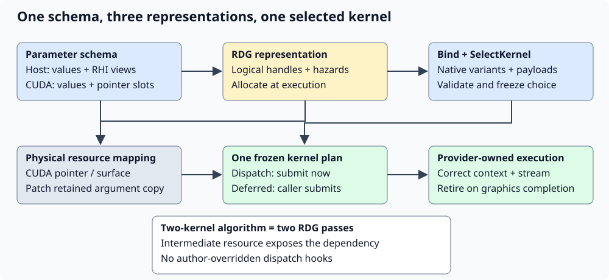
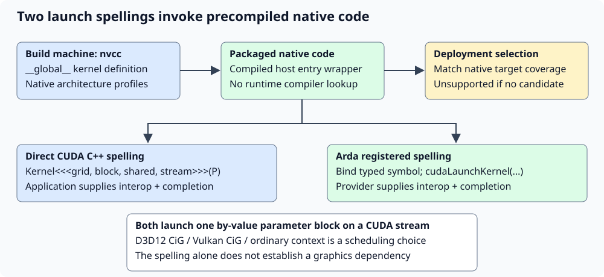

CUDA authoring and execution
Precompiled CUDA operands and graphics interoperability
Declare one parameter schema, bind native kernel variants, select one launch, and let the framework submit it or schedule it through RDG.
Learning objectives and prerequisites
Learn to author an operand using BindKernelVariants and SelectKernel, build native variants with nvcc, and predict memory/queue ownership through immediate, deferred and graph execution. Prerequisites: CUDA in graphics, command submission and resources.

Expandable source examples are compiled backend tests. The standalone triple-chevron helper is explicitly separate. The old PTX/NVRTC route and user-overridden dispatch hooks have been removed.
One operand selects and launches one compiled kernel
A compute operand is a schedulable unit: one parameter schema, a finite registry of precompiled entries, one selection decision and one kernel launch. A GEMM operand can register several tile sizes; selecting a tile does not schedule a second kernel. An algorithm requiring several kernels can group existing operands with FArdaCudaSequence, or attach typed CUDA nodes to FArdaDependencyGraph for automatic batching. See CUDA sequences for typed composition, scratch lifetime and validation.
To process graphics textures through linear pointers, use CUDA texture buffers. Native command-list and RDG helpers copy texture regions into pitched shared buffers before the complete CUDA sequence and back afterward. This supports D3D12 CiG without requiring native CUDA surface objects.
The author implements BindKernelVariants and SelectKernel. The framework owns resource validation, parameter freezing, native mapping, dispatch and submission. This division lets the scheduler inspect logical resources before allocation while the backend resolves CUDA pointers only when physical resources exist. There is no user-overridable launch callback inside a registered variant.
Understand both CUDA launch spellings
Both methods below launch already compiled __global__ functions. In ordinary CUDA C++, Kernel<<<Grid, Block, SharedBytes, Stream>>>(P) gives nvcc the launch expression. A generic registry instead stores a compiled symbol and calls cudaLaunchKernel with the same dimensions, explicit stream and one argument block. The latter lets ordinary C++ scheduling code choose between typed kernel specializations without knowing CUDA syntax.

Framework method: bind a native entry
TArdaCudaKernelVariant encodes the kernel symbol in its C++ type and pairs it with a host policy payload. BindArdaCudaKernel builds the standard entry wrapper in an nvcc translation unit. The registry erases the distinct wrapper types only after runtime validation; it checks that every kernel takes the exact generated FCuda type by value, including type identity, size and alignment. Equal byte sizes alone do not make two schemas interchangeable.
Read compiled example: ArdaCudaOperand.cu
#include "ArdaTestComputeOperand.h"
#include "Compute/ArdaCudaKernelBinding.cuh"
#include "ArdaCudaBuildInfo.h"
#include "ArdaCudaOperand.cuh"
namespace ARDA_CUDA_BUILD_NAMESPACE
{
void BindAdd(arda::FArdaAddOperand::FRegistry& Registry)
{
arda::ForEachArdaCudaPermutation(std::integer_sequence<int, 32, 128>{},
[&](auto Tile)
{
constexpr int Block = decltype(Tile)::value;
const auto Name = GetBuildInfo().mName + (Block == 32 ? ".block32" : ".block128");
Registry.Add(arda::BindArdaCudaKernel<&Add<Block>>(Name.c_str(),
arda::FArdaAddVariantInfo{Block},
GetBuildInfo()));
});
}
void BindSurface(arda::FArdaSurfaceOperand::FRegistry& Registry)
{
Registry.Add(arda::BindArdaCudaKernel<&FillSurface>("surface.u32", 8u, GetBuildInfo()));
}
}
The bridge queries cudaFuncGetAttributes under the selected CUDA context, checks the entry's launch limits, patches resource fields in a private parameter copy, and calls cudaLaunchKernel. This is why the .cpp dispatcher has no triple-chevron expression. It no longer loads text, resolves string entry points or compiles device source. Diagnostic names identify variants; pointers identify executable entries.
Direct method: ordinary triple-chevron syntax
The standalone helper below demonstrates the language spelling using application-owned pointers and a CUDA stream. It computes +7 followed by +11. The caller must provide the correct current context, memory sharing, graphics handoffs and completion lifetime. It is a conceptual comparison, not an alternate override for the operand facade; the tested operand uses the registered method above.
// Documentation helper: application-owned CUDA pointers and stream are required.
// This file is not part of ArdaBackendTests or an RHI resource/stream adapter.
#include <cuda_runtime.h>
namespace arda
{
struct FAddParameters
{
const unsigned int* Input;
unsigned int* Output;
unsigned int Count;
unsigned int Bias;
};
__global__ void AddArdaValues(FAddParameters P)
{
const unsigned int Index = blockIdx.x * blockDim.x + threadIdx.x;
if (Index < P.Count)
{
P.Output[Index] = P.Input[Index] + P.Bias;
}
}
// Input and Output cover Count elements on the current CUDA device.
// They may be identical; otherwise their ranges must not overlap.
// The caller orders graphics producers before this stream and retains
// allocations, mappings and Stream until all submitted work completes.
cudaError_t LaunchArdaAddTwice(const unsigned int* Input,
unsigned int* Output,
unsigned int Count,
cudaStream_t Stream)
{
if (!Input || !Output || !Count)
{
return cudaErrorInvalidValue;
}
const dim3 Block(128, 1, 1);
const dim3 Grid(1 + (Count - 1) / Block.x, 1, 1);
AddArdaValues<<<Grid, Block, 0, Stream>>>({Input, Output, Count, 7u});
const cudaError_t FirstStatus = cudaGetLastError();
if (FirstStatus != cudaSuccess)
{
return FirstStatus;
}
AddArdaValues<<<Grid, Block, 0, Stream>>>({Output, Output, Count, 11u});
return cudaGetLastError();
}
}
The same two stages in Arda use two operand dispatches, with mBias equal to 7 then 11. Each operand launches once. cudaGetLastError reports immediate launch errors; completion can still report an asynchronous failure. Calling a direct helper while recording an RDG pass would bypass its submission contract. Do not obtain a Vulkan device address and treat it as an imported CUDA pointer. See CUDA runtime execution and Runtime/Driver context interoperability.
Find nvcc when configuring the project
nvcc belongs on developer and CI build machines. Packaged applications do not search for it or require a CUDA Toolkit installation. The root project starts with CXX. ARDASHIR_ENABLE_CUDA enables the provider bridge; ARDASHIR_BUILD_CUDA_KERNELS controls CUDA language discovery and defaults to the provider option. With kernel builds enabled, Cmake/ArdaCudaKernels.cmake clears a previous failed compiler lookup (NOTFOUND), calls enable_language(CUDA) directly, requires NVIDIA CUDA, and finds the matching CUDAToolkit. CUDA is required in this branch, so direct enablement preserves the actual compiler, host-toolchain or generator failure instead of replacing it with a generic missing-nvcc message. Provider includes default to the single toolkit directory containing cuda.h unless explicitly overridden; separate CCCL directories in CUDAToolkit_INCLUDE_DIRS are not treated as one path.
For manual Ninja commands on Windows, start in a Visual Studio developer shell with cl.exe and Windows SDK tools available. The Python example launchers instead prepare this x64 environment automatically from an ordinary terminal and locate Visual Studio's bundled CMake/Ninja when missing from PATH; see the launcher prerequisites. They discover C++ installations with vswhere and VsDevCmd. CMake can find nvcc on the build environment's PATH, or through CUDACXX. To pin a specific toolkit on the first configure, supply an absolute compiler path and choose the native architectures you deploy:
cmake -S . -B build/cuda -G Ninja -DARDASHIR_ENABLE_CUDA=ON -DARDASHIR_BUILD_CUDA_KERNELS=ON "-DCMAKE_CUDA_COMPILER=C:/CUDA/bin/nvcc.exe" "-DCUDAToolkit_ROOT=C:/CUDA" "-DARDASHIR_CUDA_ARCHITECTURES=89;120" -DCMAKE_BUILD_TYPE=Release
cmake --build build/cuda --target ArdaBackendTests --verboseCUDACXX is an alternative first-configure compiler hint for Ninja/Makefiles. CMake caches CMAKE_CUDA_COMPILER, so changing PATH or CUDACXX does not replace a successfully cached compiler. Arda retries an old NOTFOUND result on reconfiguration; an explicit invalid compiler path is reported as an error rather than silently replaced. Use a fresh build directory when changing toolchains. find_package(CUDAToolkit) prefers the enabled compiler's toolkit; CUDAToolkit_ROOT is a toolkit lookup hint, not an override of an already selected compiler. A folder containing only cuda.h cannot compile kernels. See enable_language, CUDACXX and toolkit lookup order.
If nvcc --version works but the Visual Studio generator reports no CUDA toolset, compiler availability alone is insufficient: that generator needs CUDA MSBuild integration. Use a fresh build directory with -G Ninja in a Visual Studio developer shell, or install/select the matching integration. The Pixel Sort launcher defaults to Ninja for new builds unless --generator or CMAKE_GENERATOR overrides it; existing generator caches are preserved. With a Visual Studio generator, select installed CUDA build integration using -T cuda=13.3 (or the installed version), together with -A x64. Do not substitute CMAKE_CUDA_COMPILER for the generator's toolset selection. See Visual Studio CUDA selection. CiG needs CUDA 13.3+ provider headers and a supporting driver; ordinary external-memory execution needs CUDA 12+ headers. The selected nvcc must support every requested architecture. If compiler setup fails even with nvcc available, inspect the underlying CMake error (host compiler/Windows SDK, unsupported host version, incomplete toolkit, or target architecture); running nvcc --version does not compile or link a CUDA program. The configuring process must inherit the terminal's PATH; restart an IDE opened before toolkit installation or configure from the working terminal.
A build that only consumes already compiled operand libraries can set ARDASHIR_BUILD_CUDA_KERNELS=OFF. If it still compiles the CUDA provider, set ARDASHIR_CUDA_INCLUDE_DIR to matching SDK headers. A completely CUDA-disabled build sets both options OFF and requires neither compiler nor CUDA headers. The standalone direct launch example build has its own ARDA_EXAMPLE_BUILD_CUDA option.
Build native code separately for each flag and architecture profile
The former runtime compiler/module route has been removed. There is no PTX source, PTX asset loader, NVRTC adapter or runtime nvcc invocation in the operand facade or native providers. Missing native code returns Unsupported before recording a launch; deploy a rebuilt package for additional architectures.
Use ardashir_add_cuda_kernels once per independent profile. The helper creates a CUDA static library, compiles explicit native targets with the -real suffix, links static cudart, and generates ArdaCudaBuildInfo.h. Put kernel definitions and binding exports in ARDA_CUDA_BUILD_NAMESPACE so different flags cannot create duplicate symbols. These are the two compiled test profiles:
ardashir_add_cuda_kernels(ArdaTestCudaPortable
PROFILE portable
SOURCES Tests/ArdaCudaOperand.cu
DEPENDS Tests/ArdaCudaOperand.cuh Tests/ArdaTestComputeOperand.h)
ardashir_add_cuda_kernels(ArdaTestCudaTuned
PROFILE tuned
SOURCES Tests/ArdaCudaOperand.cu
DEPENDS Tests/ArdaCudaOperand.cuh Tests/ArdaTestComputeOperand.h
ARCHITECTURES 120 FAST_MATH)ARCHITECTURES overrides the project list per target. FAST_MATH, DEFINITIONS and OPTIONS describe that profile's compilation; use CMake foreach to generate several targets for a finite application configuration set. Template tile choices inside one profile use C++ integer sequences. Build flags cannot be changed by a runtime loop: each flag combination must already be compiled and explicitly linked through its binding export.
DEPENDS lists included project headers that participate in the manifest identity; normal CUDA dependency scanning rebuilds changed includes as well. The generated identity hashes source contents, these explicit dependencies, profile, options, definitions, targets and compiler version. It is a diagnostic profile fingerprint, not a cryptographic identity for the complete transitive toolchain. Never key a persistent tuning cache only by a user-entered kernel name.
The helper rejects virtual targets and profile options that override code generation. It emits native images only; architecture suffixes a/f are treated conservatively as exact targets. Generic pre-Blackwell binaries may match a higher minor capability in the same major family; the current runtime requires exact capability for 100 and newer. Algorithm requirements can further restrict candidates but cannot add missing binary coverage. Check CMake native architecture suffixes and CUDA binary compatibility. A new GPU may require a new package even if its compute capability is higher.
Package the executable and its runtime dependencies
Link the kernel libraries into the executable or an owned library and reference each binding export so static archive extraction keeps its kernels. The supplied helper selects static cudart. Ship the final native code and other required application libraries; a compatible NVIDIA driver remains required. If your own build chooses shared cudart or additional CUDA libraries, package those runtime dependencies explicitly. No nvcc executable, compiler headers, source text, or runtime compiler is part of this contract.
Qualification must include both packaging and GPU work: inspect each artifact with cuobjdump --list-elf and --list-ptx, run with the build toolkit absent from runtime PATH, and verify native launches, readbacks, unsupported architectures, first use and repeated use. Static cudart does not waive minimum driver requirements. See driver compatibility and runtime linkage.
The public .h facade is SDK-free. Only binding translation units include ArdaCudaKernelBinding.cuh and compile with nvcc; normal application .cpp files call the exported binding functions and framework dispatch. Compiled code must remain loaded through the last submission using it. The provided static-library workflow gives it process lifetime; hot-unloading plugin libraries is not an implemented facility.
Implement binding and selection
Derive TArdaComputeOperand with a host parameter schema and a payload type. Retain the RHI device through its constructor. Implement GetName, BindKernelVariants and SelectKernel. Dispatch, DispatchDeferred, PrepareDispatch and GetOperandSupport are framework implementations; authors cannot override them.
Read compiled example: ArdaTestComputeOperand.h
#pragma once
#include "Compute/ArdaComputeOperand.h"
namespace arda
{
#define ARDA_ADD_FIELDS(VALUE, BUFFER, SURFACE) \
BUFFER(uint32_t, mInput, EArdaComputeAccess::Read) \
BUFFER(uint32_t, mOutput, EArdaComputeAccess::Write) \
VALUE(uint32_t, mCount) \
VALUE(uint32_t, mBias)
ARDA_CUDA_PARAMETER_STRUCT(FArdaAddParameters, ARDA_ADD_FIELDS)
struct FArdaAddVariantInfo
{
uint32_t mBlockSize = 0;
};
class FArdaAddOperand final : public TArdaComputeOperand<FArdaAddParameters, FArdaAddVariantInfo>
{
public:
using TArdaComputeOperand::TArdaComputeOperand;
bool mbPreferFastMath = false;
const char* GetName() const noexcept override
{
return "sample.add";
}
void BindKernelVariants(FRegistry& Registry) const override;
TArdaRHIResult<FArdaCudaKernelSelection> SelectKernel(const FParameters& Parameters,
const FArdaCudaSelectionContext& Context,
const FVariants& Candidates) const override;
};
#define ARDA_SURFACE_FIELDS(VALUE, BUFFER, SURFACE) \
SURFACE(uint32_t, mSurface, EArdaComputeAccess::Write, EArdaRHIFormat::R32UInt) \
VALUE(uint32_t, mWidth) \
VALUE(uint32_t, mHeight) \
VALUE(uint32_t, mValue)
ARDA_CUDA_PARAMETER_STRUCT(FArdaSurfaceParameters, ARDA_SURFACE_FIELDS)
class FArdaSurfaceOperand final : public TArdaComputeOperand<FArdaSurfaceParameters, uint32_t>
{
public:
using TArdaComputeOperand::TArdaComputeOperand;
const char* GetName() const noexcept override
{
return "sample.surface";
}
void BindKernelVariants(FRegistry& Registry) const override;
TArdaRHIResult<FArdaCudaKernelSelection> SelectKernel(const FParameters& Parameters,
const FArdaCudaSelectionContext& Context,
const FVariants& Candidates) const override;
};
}
Binding runs once per operand instance through synchronized initialization. It performs no CUDA initialization or launches. The first schema/registration error is retained even if the author ignores Add's returned status. Once frozen, the registry is immutable. Do not retain a mutable registry reference, recursively inspect support from BindKernelVariants, or mutate shared policy during concurrent dispatches. Exceptions from binding or selection become runtime error statuses.
SelectKernel receives only compatible candidates, capabilities, queue type and host parameters. It returns a candidate ID plus grid, block and dynamic shared-memory configuration, or an error. It must be a side-effect-free host decision: no allocation, CUDA calls, resource writes or asynchronous work. Device/kernel-specific thread and memory limits are validated again at native recording. An explicit NoWork choice is available for algorithms that permit empty work; zero grid dimensions do not imply NoWork.
Read compiled example: ArdaTestComputeOperand.cpp
#include "ArdaTestComputeOperand.h"
#if defined(ARDA_TEST_PRECOMPILED_CUDA)
namespace arda_cuda_portable
{
void BindAdd(arda::FArdaAddOperand::FRegistry&);
void BindSurface(arda::FArdaSurfaceOperand::FRegistry&);
}
namespace arda_cuda_tuned
{
void BindAdd(arda::FArdaAddOperand::FRegistry&);
}
#endif
namespace arda
{
void FArdaAddOperand::BindKernelVariants(FRegistry& Registry) const
{
#if defined(ARDA_TEST_PRECOMPILED_CUDA)
arda_cuda_portable::BindAdd(Registry);
arda_cuda_tuned::BindAdd(Registry);
#endif
}
TArdaRHIResult<FArdaCudaKernelSelection> FArdaAddOperand::SelectKernel(const FParameters& P,
const FArdaCudaSelectionContext&,
const FVariants& Candidates) const
{
if (!P.mInput.mBuffer || !P.mOutput.mBuffer || !P.mCount)
{
return {{},
FArdaRHIStatus::Error(EArdaRHIResult::InvalidArgument,
"Add requires a nonzero count matching both views.")};
}
const auto InputRange = P.mInput.mRange.Resolve(P.mInput.mBuffer->GetDesc());
const auto OutputRange = P.mOutput.mRange.Resolve(P.mOutput.mBuffer->GetDesc());
const auto ByteCount = uint64_t(P.mCount) * sizeof(uint32_t);
if (ByteCount != InputRange.mByteSize || ByteCount != OutputRange.mByteSize)
{
return {{}, FArdaRHIStatus::Error(EArdaRHIResult::InvalidArgument, "Add count must match both views.")};
}
if (P.mInput.mBuffer == P.mOutput.mBuffer)
{
if (InputRange.mByteOffset != OutputRange.mByteOffset &&
InputRange.mByteOffset < OutputRange.mByteOffset + OutputRange.mByteSize &&
OutputRange.mByteOffset < InputRange.mByteOffset + InputRange.mByteSize)
{
return {{},
FArdaRHIStatus::Error(EArdaRHIResult::InvalidArgument,
"Add permits identical or disjoint views, but not partial overlap.")};
}
}
const uint32_t Block = P.mCount <= 64 ? 32 : 128;
const FVariants::value_type* Selected = nullptr;
for (const auto& V : Candidates)
{
const bool FastMath = V.mEntry->GetBuildInfo().mbFastMath;
if (V.mPayload.mBlockSize != Block || (FastMath && !mbPreferFastMath))
{
continue;
}
if (!Selected)
{
Selected = &V;
}
if (FastMath == mbPreferFastMath)
{
Selected = &V;
break;
}
}
if (!Selected)
{
return {{}, FArdaRHIStatus::Error(EArdaRHIResult::Unsupported, "No compatible add tile was compiled.")};
}
FArdaCudaKernelSelection Choice;
Choice.mVariantId = Selected->mId;
Choice.mLaunch.mBlockSize[0] = Block;
Choice.mLaunch.mGridSize[0] = 1 + (P.mCount - 1) / Block;
return {Choice, {}};
}
void FArdaSurfaceOperand::BindKernelVariants(FRegistry& Registry) const
{
#if defined(ARDA_TEST_PRECOMPILED_CUDA)
arda_cuda_portable::BindSurface(Registry);
#endif
}
TArdaRHIResult<FArdaCudaKernelSelection> FArdaSurfaceOperand::SelectKernel(const FParameters& P,
const FArdaCudaSelectionContext&,
const FVariants& Candidates) const
{
if (!P.mSurface.mTexture || !P.mWidth || !P.mHeight || Candidates.empty())
{
return {{},
FArdaRHIStatus::Error(EArdaRHIResult::InvalidArgument,
"Surface requires nonzero dimensions and a compiled variant.")};
}
const auto& Desc = P.mSurface.mTexture->GetDesc();
const auto Mip = P.mSurface.mRange.mBaseMipLevel;
if (Mip >= Desc.mMipLevels || Mip >= 32 || Desc.mDimension != EArdaRHITextureDimension::Texture2D ||
P.mWidth != (Desc.mWidth >> Mip) || P.mHeight != (Desc.mHeight >> Mip))
{
return {{},
FArdaRHIStatus::Error(EArdaRHIResult::InvalidArgument,
"Surface dimensions must match the selected 2D mip.")};
}
FArdaCudaKernelSelection Choice;
Choice.mVariantId = Candidates.front().mId;
Choice.mLaunch.mBlockSize[0] = Choice.mLaunch.mBlockSize[1] = 8;
Choice.mLaunch.mGridSize[0] = 1 + (P.mWidth - 1) / 8;
Choice.mLaunch.mGridSize[1] = 1 + (P.mHeight - 1) / 8;
return {Choice, {}};
}
}
One declaration produces host, CUDA and graph representations
ARDA_CUDA_PARAMETER_STRUCT expands a field-list macro into one parameter storage template. The public alias stores retained RHI resource views; its FCuda alias stores device pointers or 64-bit surface handles plus plain copied values. A Read buffer becomes const T* in CUDA, and writable buffers become T*. The device function takes that FCuda object as its only by-value argument.
Read compiled example: ArdaCudaOperand.cuh
#pragma once
// Included after the parameter declarations and generated build profile header.
namespace ARDA_CUDA_BUILD_NAMESPACE
{
template <int BlockSize>
__global__ void Add(arda::FArdaAddParameters::FCuda P)
{
const uint32_t Index = blockIdx.x * BlockSize + threadIdx.x;
if (Index < P.mCount)
{
P.mOutput[Index] = P.mInput[Index] + P.mBias;
}
}
__global__ void FillSurface(arda::FArdaSurfaceParameters::FCuda P)
{
const uint32_t X = blockIdx.x * blockDim.x + threadIdx.x;
const uint32_t Y = blockIdx.y * blockDim.y + threadIdx.y;
if (X < P.mWidth && Y < P.mHeight)
{
surf2Dwrite(P.mValue, static_cast<cudaSurfaceObject_t>(P.mSurface), X * sizeof(uint32_t), Y);
}
}
}
Host references, device slots and graph handles have different layouts. Paired metadata records member offsets in each representation; the framework copies value fields individually into a zeroed argument block and patches resource slots after resolving mappings. It never memcpy-copies an entire host object containing reference-counted resources into CUDA.
Schema eligibility, unsupported value types, wrong kernel signatures, format/range/alignment errors, missing sharing and device affinity are runtime statuses. Ordinary C++/CUDA language rules still apply: syntax errors, invalid template expressions and illegal device code cannot be postponed to runtime. Plain value aggregates must not hide host pointers or undeclared resource dependencies. Raw scalar pointer fields are rejected; C++ reflection cannot discover pointers nested inside arbitrary user structs.
Automatic resource conversion means translating a declared buffer view into its mapped CUDA pointer and a declared texture storage format into a CUDA channel/array/surface representation. It does not normalize integers, change color space, repack tensors, swizzle channels or insert a conversion kernel. Surface fields declare an exact supported storage format and compatible element byte width. Unsupported normalized/sRGB/packed/compressed/depth/multisample/cube formats return an error. Use an explicit earlier pass for numerical or layout conversion.
Buffer ranges must be nonempty, in bounds, element-aligned and divisible by element size. A surface selects exactly one mip and all its array layers; the selected mode must support its dimensionality. Partial layer views are rejected. The sample additionally validates extent/count matching and disallows partially overlapping add views while allowing identical or disjoint ranges. Resource ownership is finally checked against the recording command list's device.
Use one framework path for immediate and deferred work
TArdaComputeOperand::PrepareDispatch ensures bindings, validates resources, filters native coverage, calls selection and freezes one plan. Later edits to the caller's parameters do not change that plan. The plan retains device, resource views, values and entry ownership. TArdaComputeOperand::DispatchDeferred records it into the supplied command list without submitting. TArdaComputeOperand::Dispatch opens a list, records the same plan, submits and returns a device/queue/submission identity.
FArdaAddOperand Operand(Device);
FArdaAddParameters P;
P.mInput.mBuffer = Input;
P.mOutput.mBuffer = Output;
P.mCount = 128; P.mBias = 7;
// Framework submits one kernel now. Success is not a CPU completion wait.
auto Submitted = Operand.Dispatch(P);
if (!Submitted) return Submitted.mStatus;
// Or record one kernel into an already open, caller-owned list.
auto Recorded = Operand.DispatchDeferred(Commands, P);
if (!Recorded) return Recorded;
// Caller closes/submits Commands and observes completion before host reuse.The example Input and Output are same-device buffers created with mbCudaInterop and valid producer dependencies. Reusing the same graphics queue preserves submission order; another queue requires an explicit QueueWait dependency or RDG scheduling. RecordPlan allows reuse of the frozen decision in a fresh recording; command lists containing CUDA remain single-use. NoWork returns submission identity zero and does not submit an empty kernel. Parameters still must satisfy preparation validation before NoWork selection.
Organize translation units and retain native code
Keep the shared schema and operand declaration in a normal .h file. Put __global__ definitions in .cu or included .cuh files, and instantiate/bind them from nvcc-built .cu registration units. The .cpp BindKernelVariants implementation calls each exported registration function. This keeps CUDA syntax and headers out of ordinary application translation units and makes static-library extraction explicit.
Different profiles use different generated namespaces. Every registry entry retains its wrapper and immutable manifest; command recordings retain entries through completion, independently of the bounded per-context attribute cache. The checked-in helper links native code statically. Applications introducing unloadable modules must also keep their containing library loaded; an entry object alone cannot prevent an external DLL unload.
Enumerate finite template choices and choose using payloads
ForEachArdaCudaPermutation expands a C++17 integer sequence. Nested calls enumerate M/N/K tile dimensions; if constexpr can prune unsupported combinations before instantiation. Each instantiated symbol has its own wrapper type, while a shared payload type can hold M, N, K, alignment requirements or a human-readable tuning label. The payload guides selection and is not an extra kernel argument.
The sample binds block sizes 32 and 128, then chooses 32 for counts up to 64 and 128 otherwise. Grid.x = 1 + (Count - 1) / Block avoids overflow from Count + Block - 1. Manifest architecture coverage determines which native entries exist; algorithm requirements further filter them. A runtime-selected flag such as fast math must select a precompiled profile with that property. Do not silently label ordinary code as another architecture or infer coverage from a minimum capability alone.
Record variant ID, generated profile identity, device capability, input shape, block dimensions, shared bytes and measured time when tuning. Keep profiling outside SelectKernel and feed it an immutable chosen policy. Fast math changes numerical semantics, so an application must opt into that profile and validate its numerical tolerance.
Run the resizable Pixel Sort example
PixelSort is the Windows dependency-graph example in Source/ArdaTests/Examples/PixelSort. Its HLSL compute shader generates time-continuous domain-warped noise in an ink, indigo, lavender and coral palette. CUDA sorts the shared RGBA8UInt texture; a fullscreen graphics pass samples the result into the swap-chain back buffer. The target links ArdaBackend, ArdaRenderGraph, its native kernel library and Windows platform libraries. Public/Nodes declares the parameter and library interfaces; Private/Nodes owns shader registration, CUDA preparation and graphics recording. The renderer attaches those operations and submits cached graphs, with per-graph transient intermediates and inferred pipelines.
Build it from the repository root after following the nvcc setup section. For a clean Ninja build use a Visual Studio developer shell and choose native architectures matching the target GPU:
cmake -S . -B build/pixel-sort -G Ninja -DCMAKE_BUILD_TYPE=Release -DARDASHIR_ENABLE_CUDA=ON -DARDASHIR_BUILD_CUDA_KERNELS=ON -DARDASHIR_BUILD_PIXEL_SORT=ON -DARDASHIR_BUILD_TESTS=OFF -DARDASHIR_CUDA_ARCHITECTURES="120"
cmake --build build/pixel-sort --target PixelSort
build/pixel-sort/Source/ArdaTests/Examples/PixelSort/PixelSort.exe --backend vulkan --cuda-mode autoUse Python 3.10+ and a CUDA toolkit to run RunPixelSort.py in Scripts/Examples from ordinary PowerShell or Command Prompt. Like RunARDGExample.py and RunCornellBox.py, it automatically locates Visual Studio or Build Tools, prepares x64 MSVC/Windows SDK tools for the build subprocesses, and finds bundled CMake/Ninja if absent from PATH. Install Desktop development with C++ with MSVC x64 tools and a Windows SDK; add C++ CMake tools for Windows for bundled tools, or supply CMake 3.24+ and Ninja separately on PATH. Existing usable x64 developer environments and cached MSVC installations/toolsets are retained. Setup leaves the parent terminal and application environment unchanged. Manual CMake commands still require a developer shell. The launcher configures and builds before launching; --run-only skips Visual Studio setup, CMake and nvcc entirely. The optional positional arguments are backend, build directory and configuration. For example:
python Scripts/Examples/RunPixelSort.py vulkan build/pixel-sort Release --nvcc "C:/Program Files/NVIDIA GPU Computing Toolkit/CUDA/v13.3/bin/nvcc.exe" --architectures "120"
python Scripts/Examples/RunPixelSort.py vulkan build/pixel-sort Release --run-only --cuda-mode autoThe launcher derives the backend header directory from an explicit nvcc path; --cuda-include-dir overrides it. A new build disables other examples and tests; --cmake-arg=-DARDASHIR_BUILD_TESTS=ON enables validation provisioning. New launcher builds default to Ninja unless --generator or CMAKE_GENERATOR selects another generator; existing build settings and generators are retained unless explicitly overridden. With nvcc on PATH, --nvcc is optional. Runtime flags such as --verify, --resize-test, --frames and --capture are forwarded, and application exit codes are preserved. Use a fresh build directory when changing CUDA compilers or generators.
Selection uses actual client dimensions. Width greater than or equal to height selects RadixSort<128, false>: 128 threads, four pixels per thread, 512-pixel row tiles and grid (ceil(width/512), height, 1). Portrait selects RadixSort<256, true>: 256 threads, 1024-pixel column tiles and grid (ceil(height/1024), width, 1). An integer-sequence binding loop instantiates both typed entries in one native build profile. Each entry takes the same generated FCuda object by value. Resize changes only the selected entry and dimensions; it never compiles CUDA.
This is segmented sorting. Within each tile, pixels whose integer luminance (54*R + 183*G + 19*B) >> 8 is below the threshold delimit bright runs and remain fixed. A prefix count of those boundaries gives each pixel a run ID. Stable radix passes order the composite (run ID, selected channel) key; the complete RGBA pixel moves with its key, preserving the palette. Tile edges terminate runs, so the result is not a globally sorted row or column. Padding moves to the end and never writes outside the texture. The bounded tile keeps shared storage around 8/16 KiB plus counters and lets each block finish independently in one kernel launch. Column accesses are less contiguous; the two choices demonstrate a visual policy, not a proven optimum.
The renderer attaches the registered UploadFrame, Noise, Sort and Present operations. ArdaInductor resolves their resource dependencies, emits transitions and supplies the CUDA sequence; node callbacks record graphics work or prepare the CUDA operand. The renderer submits the cached graph and waits on its ticket only for diagnostic readback or capture. Recycling an occupied graph frame slot can also wait. The Vulkan storage-image annotation is rgba8ui, matching RGBA8UInt; CUDA surface X coordinates are byte offsets (pixel X times four). The consumer divides integer colors by 255 explicitly. The backend supplies both graphics/CUDA handoffs described in the ordering model. Normal frames use GPU ordering; resizing and shutdown wait before replacing or releasing resources. Minimizing suspends rendering, and restoring rebuilds the size-dependent resources.
Press C to cycle RGB keys (red by default), Space to pause, Tab to view the original, Up/Down to adjust the threshold, and Escape to close. The title shows the actual CUDA mode and selected direction/thread count. Enable tests with cmake -S . -B build/pixel-sort -DARDASHIR_BUILD_TESTS=ON and rebuild PixelSort. Then ctest --test-dir build/pixel-sort -R "^PixelSort[.]" --output-on-failure runs automatic, ordinary and forced graphics modes for both backends. The mode tests make six actual Win32 resizes, check every output pixel against a CPU stable-sort reference, and require zero native validation errors. Partial/multiple tiles, both directions, all RGB keys and multiple thresholds are exercised. Two additional tests, PixelSort.d3d12.Replay and PixelSort.vulkan.Replay, verify eight frames at a fixed extent to exercise cached graph reuse. --time 4 --frames 1 --capture portrait.png freezes time and saves the rendered back buffer; see the PixelSort contract for options and return codes.
Local Windows SM 120 qualification passes D3D12 automatic/ordinary execution and Vulkan automatic/ordinary/CUDA-in-graphics. D3D12 CiG surface qualification is unavailable on driver 610.62, so the forced graphics test skips with its reason. Workload or pixel mismatches remain failures. The runtime package contains the executable and deployed D3D12, Nodes/Shaders and ShaderCompiler directories; this editable example caches HLSL graphics artifacts beside the executable using the included DXC. Its CUDA code is already linked, with no runtime nvcc, PTX or NVRTC path. Full source and the build/run README are in Source/ArdaTests/Examples/PixelSort in the repository.
Compile persistent CUDA resource dependencies
Use TArdaDependencyCudaParameters to rebind an operand schema to persistent graph resource handles. RegisterArdaCudaOperandNode registers either a compiled kernel operand or an external library operand. ArdaInductor derives accesses and coalesces CUDA nodes into a single native batch where dependencies permit.
FArdaDependencyGraph Graph(Device);
if (auto S = Graph.BeginGraphEdit(); !S) return S;
// Create/import Input, Middle and Output in this transaction.
if (auto S = RegisterArdaCudaOperandNode("app.add", Operand); !S) return S;
TArdaDependencyCudaParameters<FArdaAddParameters> P;
P.mInput.mResource = Input; P.mOutput.mResource = Middle;
P.mCount = 128; P.mBias = 7;
auto First = Graph.AttachOrFind("add seven", "app.add", P);
if (!First) return First.mStatus;
P.mInput.mResource = Middle; P.mOutput.mResource = Output; P.mBias = 11;
auto Second = Graph.AttachOrFind("add eleven", "app.add", P);
if (!Second) return Second.mStatus;
if (auto S = Graph.MarkOutput(Output); !S) return S;
if (auto S = Graph.EndGraphEdit(); !S) return S;
return Graph.Execute().mStatus;Each resource value has one producer. Output consumers may be attached before producers; dependency resolution defines execution order. Graph-owned CUDA buffers receive dedicated compatible storage, and nonoverlapping values can reuse that storage with explicit ordering. Parameter snapshots and definitions survive across frames.
mCudaGraphMode controls native capture and replay. D3D12 CiG stays on the graphics queue; the compiler owns ordered capture/submission. Unregister device-bound definitions when their library lifetime ends. See ArdaInductor and CUDA sequences.
Choose an alternative before recording writes
TArdaComputeOperand::GetOperandSupport reports schema/registry/device/native-coverage admission without launching. Texture capability and actual allocation admission are separate. Automatic device mode prefers CiG and can use an ordinary context when CiG initialization or D3D12 surface qualification fails. GraphicsQueue pins CiG; ContextSwitch selects ordinary CUDA. These choices are fixed before resources are allocated.
The single-kernel operand does not automatically execute a graphics implementation or retry after a partial launch. Select an application graphics pass before recording CUDA when support or sharing is unavailable. External library operands use the framework-owned stream and explicit preparation/capture contracts, and can share a batch with compiled kernels.
Verify outputs, packaging and capability failures
The native tests exercise D3D12 ContextSwitch, Vulkan ContextSwitch, D3D12 CiG and Vulkan CiG on Windows, RTX PRO 6000 Blackwell (SM 120), driver 610.62 with CUDA 13.3. Native buffers, frozen plans, immediate/deferred methods, offsets/guards and a coalesced persistent graph chain pass in all four modes. Nonzero-mip R32UInt surfaces pass in both ordinary contexts and Vulkan CiG. The D3D12 CiG surface probe fails with CUDA_ERROR_UNKNOWN, so that surface test explicitly skips and Automatic uses ordinary CUDA. Layered Vulkan imports remain disabled pending cross-API layout qualification.
Host tests reject incompatible schema/signature/layout/build metadata at runtime and exercise immutable registration, concurrent one-time binding and permutation filtering. The CUDA-disabled build still compiles the public facade and runs these tests. cuobjdump confirms the tested executable contains native sm_80/sm_120 code and no PTX. Other GPUs and operating systems are not covered by this local hardware qualification.
- No compatible variant
- Inspect generated target coverage, device capability and requirements; rebuild and redeploy the missing native profile. Do not invoke a runtime compiler.
- InvalidArgument
- Check exact FCuda signature, value eligibility, resource range/format/alignment and selected variant geometry. Preserve the first error.
- WrongDevice
- Use resources, operand and command list from the same RHI device; compare UUID/LUID when diagnosing native adapter selection.
- Capture or replay failure
- Submit or discard the previous D3D12 CiG list in capture order and create a fresh recording for repeated work.
- Stale output or a hang
- Draw both handoffs and final consumers. Inspect graphics validation, CUDA errors, semaphore signal/wait order and frame-slot lifetime. Never retry another implementation over partial writes.
Run the test executable with --gtest_filter=ArdaCompute*:ArdaCuda*:*ArdaCudaGpu*. See validation setup for required native layers and explicit skips, and the implementation record for qualification limits.
Checkpoints and further reading
A reusable operand separates finite build products, pure selection and framework execution. Check your understanding:
- Why do all registered kernels take FCuda rather than the retained host struct?
- How does a template tile choice differ from a compiler flag profile?
- Why does the generic dispatch use cudaLaunchKernel instead of visible triple-chevron syntax?
- Which failures are runtime statuses, and which still belong to the C++ compiler?
- When can the +7/+11 intermediate buffer be reused?
- How does ArdaInductor order D3D12 CiG capture and submission?
Find answers in parameter representations, tuning, launch methods, RDG scheduling and completion lifetime. Continue with CUDA in graphics fundamentals, RDG and the canonical API reference. NVIDIA and CMake primary references are linked beside the mechanisms they specify.